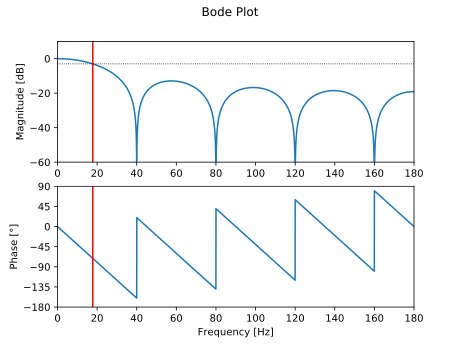
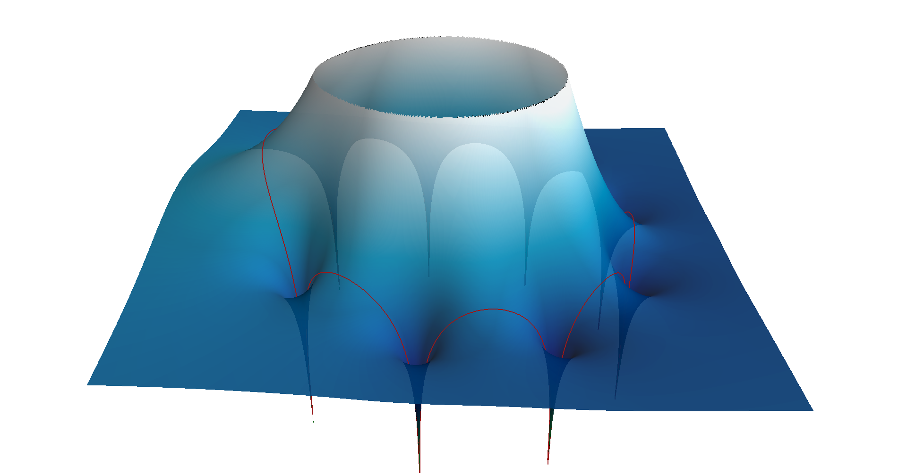
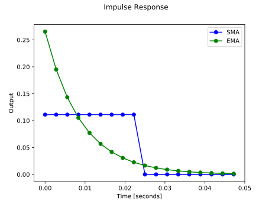
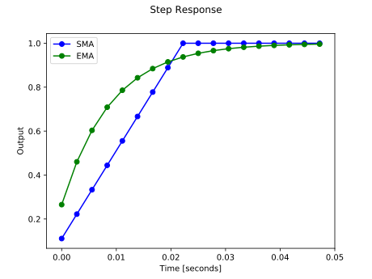
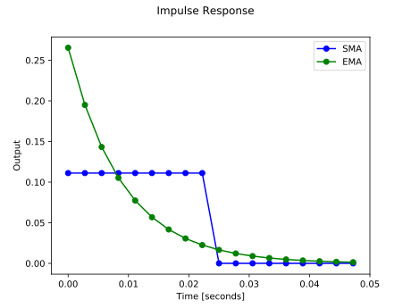
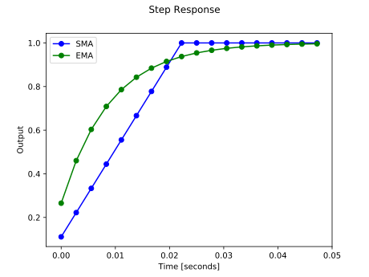

$$ y[n] = \frac{1}{N} \sum_{i=0}^{N-1}x[n-i] $$
In this equation, \(y[n]\) is the current output, \(x[n]\) is the current
input, \(x[n-1]\) is the previous input, etc.
\(N\) is the length of the average.
From the difference equation, we can now easily derive the impulse and step response.
The impulse response is the output of the filter when a Kronecker delta function is applied to the input.
$$ \delta[n] \triangleq \begin{cases}
1 & n = 0 \\
0 & n\ne0
\end{cases} $$
$$ y_{impulse}[n] = h[n] = \frac{1}{N} \sum_{i=0}^{N-1}\delta[n-i] =
\begin{cases}
1/N & 0 \le n \lt N \\
0 & \text{otherwise}
\end{cases} $$
For example, if \(N = 15\), the impulse response is as follows:
The step response is the output of the filter when a Heaviside step function is applied to the input.
$$ H[n] \triangleq \begin{cases}
0 & n \lt 0 \\
1 & n \ge 0
\end{cases} $$
$$ y_{step}[n] = \begin{cases}
0 & n \lt 0 \\
(n+1)/N & 0 \le n \lt N \\
1 & n \ge N \\
\end{cases} $$
For example, if \(N = 15\), the step response is as follows:

Any discrete signal can be written as an infinite sum of scaled Kronecker deltas.
$$ x[n] = \sum_{k=0}^{+\infty} x[k] \delta[n-k] $$
You can easily see that all terms where \(n \ne k\) are zero, because the Kronecker delta is zero in that case.
Only the term for \(n = k\) is non-zero, in which case the Kronecker delta is one, so the result is just \(x[k]\).
We'll use this property in the following proof.
You can express the output of discrete-time linear time-invariant systems, of which the SMA is an example,
as the convolution of the input with the impulse response.
If \(T\) is the transformation performed by the DTLTI system, and by using the fact that \(T\) is a linear transformation and that it is time-invariant: $$ \begin{split} y[n] &= T\left(x[n]\right) \\ &= T\left(\sum_{k=0}^{\infty} x[k] \delta[n-k]\right) \\ &= \sum_{k=0}^{\infty} T\left(x[k] \delta[n-k]\right) \\ &= \sum_{k=0}^{\infty} x[k] T\left(\delta[n-k]\right) \\ &= \sum_{k=0}^{\infty} x[k] h[n-k] \\ &\triangleq x[n] * h[n] \end{split} $$ The \(*\) symbol in the last step is called the convolution operator, and it is defined as the sum in the step before it. \(\quad\Box\)
Analysis of such systems is usually easier in the Z-domain, in which the convolution is reduced to a simple
product.
The (unilateral) Z-transform is defined as:
$$ {\cal Z}\{x[n]\} \triangleq \sum_{n=0}^{\infty} x[n] z^{-n} $$
If \(X(z) \triangleq {\cal Z}\{x[n]\}\), \(Y(z) \triangleq {\cal Z}\{y[n]\}\) and \(H(z) \triangleq {\cal Z}\{h[n]\}\)
are the Z-transforms of the input, output and impulse response respectively, then:
$$ \begin{split}
{\cal Z}\{y[n]\} &= {\cal Z}\{x[n] * h[n]\} \\
= Y(z) &= \sum_{n=0}^\infty x[n] * h[n] z^{-n}\\
&= \sum_{n=0}^\infty \sum_{k=0}^\infty x[k] h[n-k] z^{-n} \\
&= \sum_{k=0}^\infty \sum_{n=0}^\infty x[k] h[n-k] z^{-n + k - k} \\
&= \sum_{k=0}^\infty x[k] z^{-k} \sum_{n=0}^\infty h[n-k] z^{-(n - k)} \\
&\quad l \triangleq n - k \\
&= \sum_{k=0}^\infty x[k] z^{-k} \sum_{l=-k}^\infty h[l] z^{-l} \\
&= \sum_{k=0}^\infty x[k] z^{-k} \sum_{l=0}^\infty h[l] z^{-l} \\
&= X(z) H(z) \\
H(z) &= \frac{Y(z)}{X(z)}
\end{split} $$
\(H(z)\) is called the transfer function of the system.
Changing the boundaries of the second summation is valid, because if \(l\ \lt 0\), then \(h[l]\)
is zero by definition of unilateral signals.
Let's calculate the transfer function of the SMA.
We can use one of two approaches: use the difference equation and use some of
the properties of the Z-transform to calculate \(\frac{Y(z)}{X(z)}\), or apply
the definition of the Z-transform to the impulse response \(h[n]\) directly.
We can solve the summation in a different way using the formula for the sum of a geometric series: $$ \sum_{n=0}^{N-1} r^n = \frac{1-r^N}{1-r} $$ The transfer function then becomes: $$ \begin{split} H(z) &= \frac{1}{N} \sum_{n=0}^{N-1} z^{-n} \\ &= \frac{1}{N} \sum_{n=0}^{N-1} \left(\frac{1}{z}\right)^n \\ &= \frac{1}{N} \frac{1-z^{-N}}{1-z^{-1}} \\ \end{split} $$
In these expressions, \(z\) is a complex variable, and \(H(z)\) is a complex
function.
There are a couple of interesting values for \(z\): values that result in
the transfer function becoming zero, called zeros,
and values that result in the transfer function becoming undefined,
called poles.
They can be found as the roots of the numerator and the denominator
respectively, after eliminating any common factors.
The roots of the numerator are the solutions of \(1-z^{-N} = 0\) or \(z^N = 1\). Note that this equation has \(N\) solutions, namely all \(N\)-th roots of unity. One of the solutions is \(z=1\), but there are \(N-1\) complex solutions as well, evenly spaced along the unit circle: \(e^{2\pi jn/N}\ |\ n \in [0, N-1]\).
The roots of the denominator are the solutions of \(1-z=0\). This has just
one solution, \(z=1\).
Since both the numerator and the denominator have this root in common, we
have to factor out this common factor.
$$ \begin{split}
\text{zeros} &= \left\{e^{2\pi jn/N}\ |\ n \in [1, N-1]\right\} \\
\text{poles} &= \phi \\
\end{split} $$
The poles and zeros determine the overall effect of the transfer function,
so pole-zero plots are a very useful tool when describing filters.
This is the pole-zero plot of the same example SMA as before, with
\(N = 15\).
 The zeros are indicated by an O, and the poles by an X
(as discussed before, the SMA doesn't have any poles).
The zeros are indicated by an O, and the poles by an X
(as discussed before, the SMA doesn't have any poles).
An important property of discrete-time linear time-invariant systems is that it preserves the frequency
of sinusoidal signals, only the phase shift and the amplitude are altered.
This makes it relatively easy to express the frequency response (sometimes called magnitude response) of a filter.
We're interested in the spectrum of frequencies that a signal contains, so it makes sense to decompose it as a sum of sines and cosines. That's exactly what the discrete-time Fourier transform does: $$ X_{2\pi}\left(\omega\right) = \sum_{n=-\infty}^{\infty} x[n] e^{-i\omega n} $$ Note that this is just a special case of the Z-transform, where \(z = e^{i\omega}\).
The frequency response of the filter describes how the spectrum of a signal is altered when it passes
through the filter. It relates the spectrum of the output signal \(Y(\omega)\) to the spectrum
of the input signal \(X(\omega)\). We already had an expression for the spectrum of the output divided
by the spectrum of the input, we called it the transfer function \(H(z) = Y(z) / X(z)\).
To get the frequency response of the filter, we can just evaluate the transfer function for \(z = e^{i\omega}\).
Also note that this is the DTFT of the impulse response \(h[k]\).
We use the formula \(e^{j\theta}-e^{-j\theta} = 2j\sin(\theta)\).
$$ \begin{split}
{\cal F}_{DTFT}\{h[k]\} &= \sum_{n=-\infty}^{\infty} h[n] e^{-i\omega n} \\
&= H(e^{i\omega}) \\
&= \frac{1}{N} \frac{1-e^{-j\omega N}}{1-e^{-j\omega}} \\
&= \frac{1}{N} \frac{e^{-j\omega N/2}}{e^{-j\omega/2}}
\frac{e^{j\omega N/2}-e^{-j\omega N/2}}{e^{j\omega/2}-e^{-j\omega/2}} \\
&= \frac{1}{N} \frac{e^{-j\omega N/2}}{e^{-j\omega/2}}
\frac{2j \sin\left(\frac{\omega N}{2}\right)}
{2j \sin\left(\frac{\omega}{2}\right)} \\
&= \frac{e^{-\frac{j\omega}{2}\left(N-1\right)}}{N}
\frac{\sin\left(\frac{\omega N}{2}\right)}
{\sin\left(\frac{\omega}{2}\right)} \\
\end{split} $$
We can now calculate the amplitude of each frequency component in the output by taking the modulus
of \(H(e^{i\omega})\). For reasons that will become apparent in a minute, we'll calculate the modulus squared.
$$ \begin{split}
\left| H(e^{i\omega}) \right|^2
&= \left| \frac{e^{-\frac{j\omega}{2}\left(N-1\right)}}{N}
\frac{\sin\left(\frac{\omega N}{2}\right)}
{\sin\left(\frac{\omega}{2}\right)} \right|^2 \\
&= \frac{1}{N^2} \frac{\sin^2\left(\frac{\omega N}{2}\right)}
{\sin^2\left(\frac{\omega}{2}\right)} \\
\end{split} $$
\(\omega\) is the normalized pulsatance (angular frequency) in radians per
sample. You can substitute it with \(\omega = \frac{2\pi f}{f_s}\) where
\(f\) is the frequency in Hertz, and \(f_s\) is the sample frequency of the
system in Hertz.
We can now plot the filter's gain in function of the frequency. These plots often use a logarithmic scale, to show the gain in decibels. In order to calculate the power gain, the amplitude is squared. $$ A_{dB}(\omega) = 10\ \log_{10} \left| H\left(e^{i\omega}\right)\right|^2 $$ Note that when a frequency is not present in the output signal, the gain will be \(-\infty\ dB\). If a frequency has an amplitude of one in the output signal, the gain will be \(0\ dB\).
We can also plot the phase shift introduced by the SMA. This is just the complex argument of the transfer function. $$ \phi(\omega) = \angle H(e^{j\omega}) $$
The image below shows the bode plot of an SMA with a length of \(N = 9\),
and a sample frequency of \(f_s = 360 \text{Hz}\). The frequency axis is
limited between \(0\ Hz\) and the Nyquist frequency \(f_s/2\). This
corresponds to a normalized pulsatance of \(\omega \in [0, \pi)\).

You can clearly see the low-pass behavior of the SMA: low frequencies have a
near-unit gain, and high frequencies are attenuated.
Also note the zeros, where the magnitude plot goes to \(-\infty\ dB\).
In a zero, the transfer function changes sign, so the phase jumps \(180°\)
as well.
To get a better understanding of where this curve comes from, we can plot
the entire \(\left| H(z)\right|\) surface in the Z-domain.
As mentioned above, the DTFT is just a special case of the Z-transform,
where \(z = e^{i\omega}\), i.e. the unit circle in the complex plane.
Remember that the point \(z = e^{i\omega}\) is a point with a distance
of \(1\) to the origin, and with an angle of \(\omega\ \mathrm{rad}\)
between its position vector and the positive x axis.

The image of the unit circle is shown in red. Notice that this is the same curve as the blue curve in the
magnitude response graph above:
close to 0 when \(\omega → 0\) (the left half of the circle) and negative when \(\omega → \pi\) (the right half of
the circle). Note that the positive x axis points to the left hand side (y points out of the screen, and z points up).
The cutoff frequency is defined as the frequency of the half-power point, where the power gain is a half. It's
often called the \(-3\ dB\)-point,
because \(10 \log_{10}\left(\frac{1}{2}\right) \approx -3.01\ dB\).
To find it, just solve the following equation:
$$ \left| H\left(e^{i\omega_c}\right) \right|^2 = \frac{1}{2} $$
$$ \begin{split}
\frac{1}{N^2} \frac{\sin^2\left(\frac{\omega_c N}{2}\right)}
{\sin^2\left(\frac{\omega_c}{2}\right)} &= \frac{1}{2} \\
\sin^2\left(\frac{\omega_c N}{2}\right) &= \frac{N^2}{2}
\sin^2\left(\frac{\omega_c}{2}\right) \\
\sin^2\left(\frac{\omega_c N}{2}\right) - \frac{N^2}{2}
\sin^2\left(\frac{\omega_c}{2}\right) &= 0 \\
\end{split} $$
This equation doesn't have a general analytical solution, but we can use
numerical methods to determine the cut-off frequency.
 Note that the intersections at zero and \(2\pi\) are not valid solutions.
In these points the transfer function is undefined, because it evaluates to
\(0/0\). We only care about the first solution for
\(\omega_c \in (0, \pi)\).
Note that the intersections at zero and \(2\pi\) are not valid solutions.
In these points the transfer function is undefined, because it evaluates to
\(0/0\). We only care about the first solution for
\(\omega_c \in (0, \pi)\).
A possible approach to find the intersection is to use the
Newton-Raphson
method.
A good starting point seems to be at half the period of the high-frequency
sine wave.
We don't have to keep the squares, because both sines will be positive in
the region of the intersection.
$$ \begin{split}
f(\omega_c) &= \sin\left(\frac{\omega_c N}{2}\right) - \frac{N}{\sqrt{2}}
\sin\left(\frac{\omega_c}{2}\right) \\
f'(\omega_c) &= \frac{N}{2} \cos\left(\frac{\omega_c N}{2}\right) - \frac{N}{2\sqrt{2}}
\cos\left(\frac{\omega_c}{2}\right) \\
\omega_c^{(0)} &= \pi / N \\
\end{split} $$
A Python implementation can be found in the get_sma_cutoff
function in the snippet below.
We can use the SciPy and Matplotlib modules to plot the frequency response in Python.
This is the script that was used to generate the plots in the previous paragraphs.
from scipy.optimize import newtonfrom scipy.signal import freqz, dimpulse, dstepfrom math import sin, cos, sqrt, piimport numpy as npimport matplotlib.pyplot as plt# Function for calculating the cut-off frequency of a moving average filterdef get_sma_cutoff(N, **kwargs):func = lambda w: sin(N*w/2) - N/sqrt(2) * sin(w/2) # |H(e^jω)| = √2/2deriv = lambda w: cos(N*w/2) * N/2 - N/sqrt(2) * cos(w/2) / 2 # dfunc/dxomega_0 = pi/N # Starting condition: halfway the first period of sin(Nω/2)return newton(func, omega_0, deriv, **kwargs)# Simple moving average design parametersf_s = 100N = 5# Find the cut-off frequency of the SMAw_c = get_sma_cutoff(N)f_c = w_c * f_s / (2 * pi)# SMA coefficientsb = np.ones(N)a = np.array([N] + [0]*(N-1))# Calculate the frequency responsew, h = freqz(b, a, worN=4096)w *= f_s / (2 * pi) # Convert from rad/sample to Hz# Plot the amplitude responseplt.subplot(2, 1, 1)plt.suptitle('Bode Plot')plt.plot(w, 20 * np.log10(abs(h))) # Convert modulus to dBplt.ylabel('Magnitude [dB]')plt.xlim(0, f_s / 2)plt.ylim(-60, 10)plt.axvline(f_c, color='red')plt.axhline(-3.01, linewidth=0.8, color='black', linestyle=':')# Plot the phase responseplt.subplot(2, 1, 2)plt.plot(w, 180 * np.angle(h) / pi) # Convert argument to degreesplt.xlabel('Frequency [Hz]')plt.ylabel('Phase [°]')plt.xlim(0, f_s / 2)plt.ylim(-180, 90)plt.yticks([-180, -135, -90, -45, 0, 45, 90])plt.axvline(f_c, color='red')plt.show()# Plot the impulse responset, y = dimpulse((b, a, 1/f_s), n=2*N)plt.suptitle('Impulse Response')_, _, baseline = plt.stem(t, y[0], basefmt='k:')plt.setp(baseline, 'linewidth', 1)baseline.set_xdata([0,1])baseline.set_transform(plt.gca().get_yaxis_transform())plt.xlabel('Time [seconds]')plt.ylabel('Output')plt.xlim(-1/f_s, 2*N/f_s)plt.yticks([0, 0.5/N, 1.0/N])plt.show()# Plot the step responset, y = dstep((b, a, 1/f_s), n=2*N)plt.suptitle('Step Response')_, _, baseline = plt.stem(t, y[0], basefmt='k:')plt.setp(baseline, 'linewidth', 1)baseline.set_xdata([0,1])baseline.set_transform(plt.gca().get_yaxis_transform())plt.xlabel('Time [seconds]')plt.ylabel('Output')plt.xlim(-1/f_s, 2*N/f_s)plt.yticks([0, 0.2, 0.4, 0.6, 0.8, 1])plt.show()
 



from scipy.optimize import newtonfrom scipy.signal import freqz, dimpulse, dstepfrom math import sin, cos, sqrt, piimport numpy as npimport matplotlib.pyplot as plt# Function for calculating the cut-off frequency of a moving average filterdef get_sma_cutoff(N, **kwargs):func = lambda w: sin(N*w/2) - N/sqrt(2) * sin(w/2) # |H(e^jω)| = √2/2deriv = lambda w: cos(N*w/2) * N/2 - N/sqrt(2) * cos(w/2) / 2 # dfunc/dxomega_0 = pi/N # Starting condition: halfway the first period of sin(Nω/2)return newton(func, omega_0, deriv, **kwargs)# Simple moving average design parametersf_s = 360N = 9# Find the cut-off frequency of the SMAw_c = get_sma_cutoff(N)f_c = w_c * f_s / (2 * pi)# Calculate the pole location of the EMA with the same cut-off frequencyb = 2 - 2*cos(w_c)alpha = (-b + sqrt(b**2 + 4*b)) / 2# SMA & EMA coefficientsb_sma = np.ones(N)a_sma = np.array([N] + [0]*(N-1))b_ema = np.array((alpha, 0))a_ema = np.array((1, alpha - 1))# Calculate the frequency responsew, h_sma = freqz(b_sma, a_sma, worN=4096)w, h_ema = freqz(b_ema, a_ema, w)w *= f_s / (2 * pi) # Convert from rad/sample to Hz# Plot the amplitude responseplt.subplot(2, 1, 1)plt.suptitle('Bode Plot')plt.plot(w, 20 * np.log10(abs(h_sma)), # Convert modulus to dBcolor='blue', label='SMA')plt.plot(w, 20 * np.log10(abs(h_ema)),color='green', label='EMA')plt.ylabel('Magnitude [dB]')plt.xlim(0, f_s / 2)plt.ylim(-60, 10)plt.axvline(f_c, color='red')plt.axhline(-3.01, linewidth=0.8, color='black', linestyle=':')plt.legend()# Plot the phase responseplt.subplot(2, 1, 2)plt.plot(w, 180 * np.angle(h_sma) / pi, # Convert argument to degreescolor='blue')plt.plot(w, 180 * np.angle(h_ema) / pi,color='green')plt.xlabel('Frequency [Hz]')plt.ylabel('Phase [°]')plt.xlim(0, f_s / 2)plt.ylim(-180, 90)plt.yticks([-180, -135, -90, -45, 0, 45, 90])plt.axvline(f_c, color='red')plt.show()# Plot the impulse responset, y_sma = dimpulse((b_sma, a_sma, 1/f_s), n=2*N)t, y_ema = dimpulse((b_ema, a_ema, 1/f_s), n=2*N)plt.suptitle('Impulse Response')plt.plot(t, y_sma[0], 'o-',color='blue', label='SMA')plt.plot(t, y_ema[0], 'o-',color='green', label='EMA')plt.xlabel('Time [seconds]')plt.ylabel('Output')plt.xlim(-1/f_s, 2*N/f_s)plt.legend()plt.show()# Plot the step responset, y_sma = dstep((b_sma, a_sma, 1/f_s), n=2*N)t, y_ema = dstep((b_ema, a_ema, 1/f_s), n=2*N)plt.suptitle('Step Response')plt.plot(t, y_sma[0], 'o-',color='blue', label='SMA')plt.plot(t, y_ema[0], 'o-',color='green', label='EMA')plt.xlabel('Time [seconds]')plt.ylabel('Output')plt.xlim(-1/f_s, 2*N/f_s)plt.legend()plt.show()